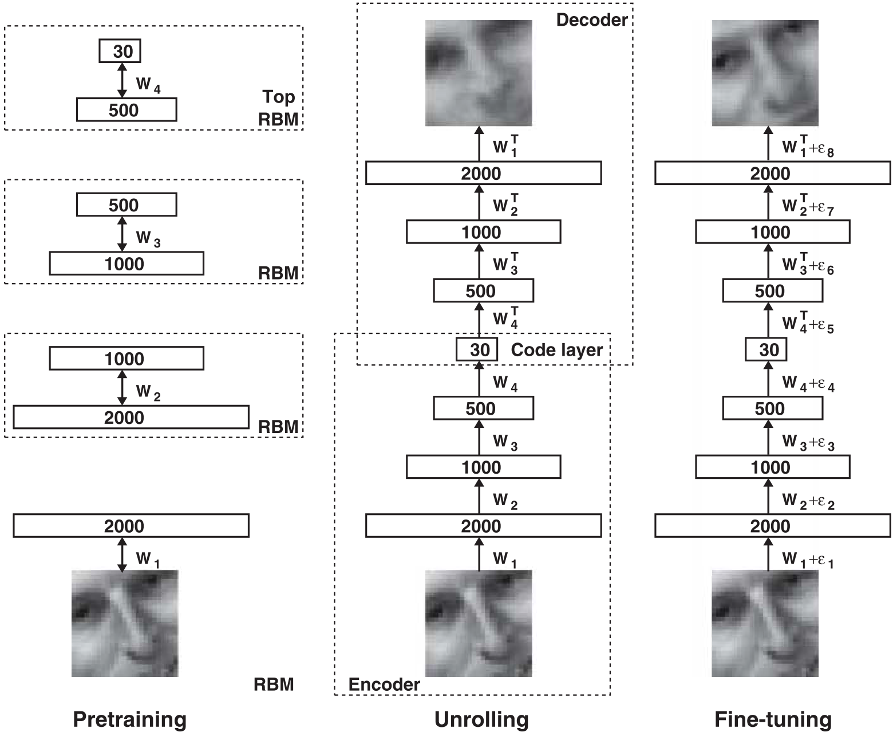

Reducing the Dimensionality of Data with Neural Networks¶
A simple and widely used method for dimensionality reduction is principal components analysis (PCA). The authors describe a nonlinear generalization of PCA that uses an adaptive, multilayer "encoder" network to transform the high-dimensional data into a low-dimensional code and a similar "decoder" network to recover the data from the code. The whole system is called an "autoencoder" and is depicted in the figure below.
{kind=link}
"Pretraining"¶
Gradient descent can be used for fine-tuning the weights, but this works well only if the initial weights are close to a good solution. The authors introduce this "pretraining" procedure for binary data, generalize it to real-valued data, and show that it works well for a variety of data sets.
An ensemble of binary vectors can be modeled using a two-layer network called a "restricted Boltzmann machine" (RBM) in which stochastic binary pixels are connected to stochastic binary feature detectors using symmetrically weighted connections.
After learning the first layer of feature detectors, this procedure can be repeated by using the hidden layer of the previous RBM as the visible layer in the next.
Training¶
After pretraining multiple layers of feature detectors, the model is "unfolded" to produce encoder and decoder networks that initially use the same weights. The global fine-tuning stage then replaces stochastic activities by deterministic, real-valued probabilities and use backpropagation through the whole autoencoder to fine-tune the weights for optimal reconstruction.
{kind=link}
{kind=link}
Conclusion¶
Unlike nonparametric methods, autoencoders give mappings in both directions between the data and code spaces, and they can be applied to very large data sets because both the pretraining and the fine-tuning scale linearly in time and space with the number of training cases.